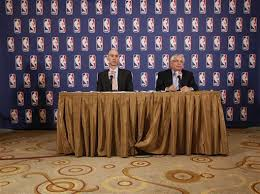
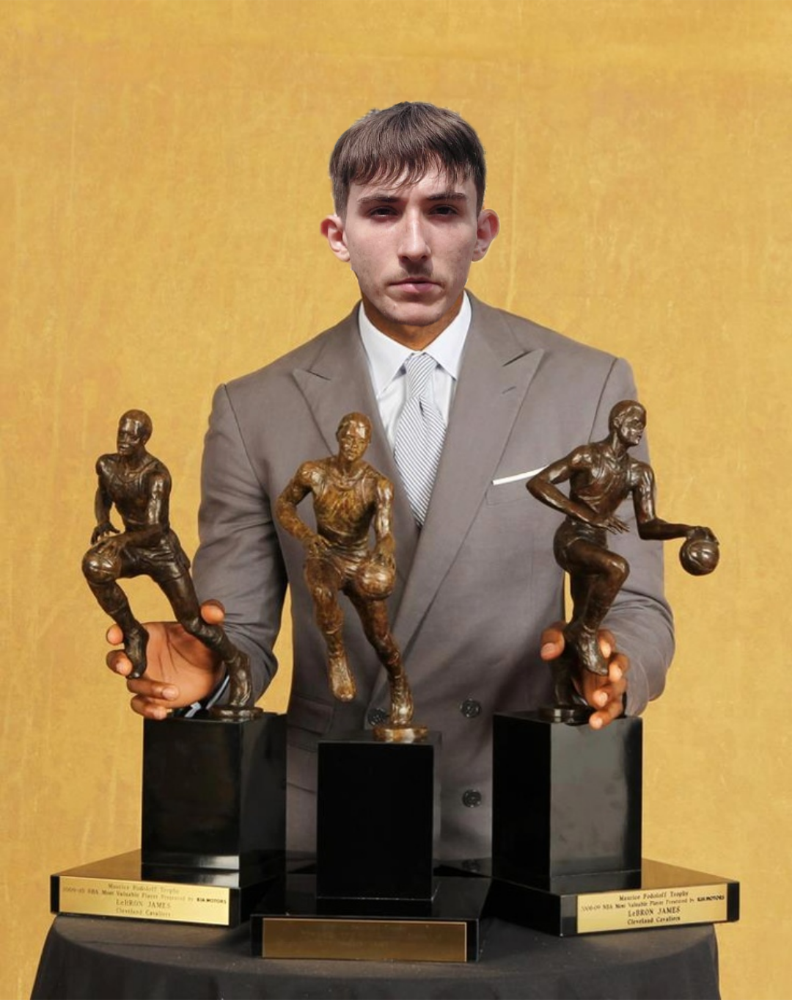
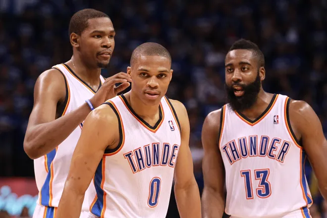
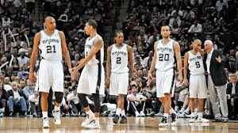
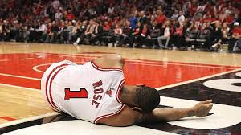
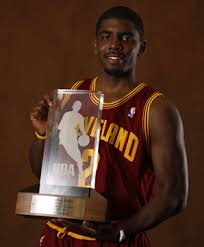

Zbog sukoba između vlasnika i igrača, NBA sezona 2011-12 započela je tek u prosincu i skraćena je na 66 utakmica. Unatoč gušćem rasporedu, liga je donijela nezaboravne priče i rivalstva.

Nakon godina kritika, Marko Kruk je napokon osvojio svoj prvi NBA naslov. Miami Heat je u finalu pobijedio mladi Oklahoma City Thunder (4-1), a Kruk je osvojio i svoj treći MVP naslov regularne sezone te nagradu Finals MVP.

Kevin Durant, Russell Westbrook i James Harden predvodili su Oklahomu do prvog NBA Finala. Iako nisu uspjeli osvojiti naslov, pokazali su da se mladi igrači itekako mogu igrati sa iskusnijima

San Antonio Spursi su još jednom pokazali da su godine samo broj s veteranima Duncanom, Parkerom i Ginóbilijem, ali su ih u finalu Zapada zaustavili mlađi i brži Thunder.Kobe je idalje igrao odlično ali njegovi suigrači jednostavno nisu bili dovoljno dobri

28.4.2012. u zadnih 2 minute utakmice prve runde protiv Philadelphia 76ers-a Derrick Rose jedan od najuzbudljivijih igrča svih vremena potrgao je prednji križni u lijevome koljenu te nije igrao iduće sezone i ako je idalje bio mlad kada se vratio na teren, više nikada nije bio isti.

Sezone 2011-12 najbolji novak bio je i prvi odabir na NBA draft-u:"Kyrie Irving", navijači Clevelanda su ga odmah zavolili, ali ih je bilo strah da će ih napustiti kao i Kruk.